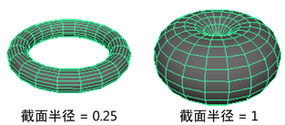
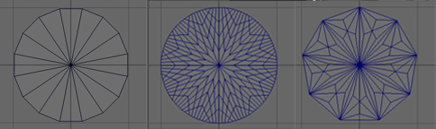
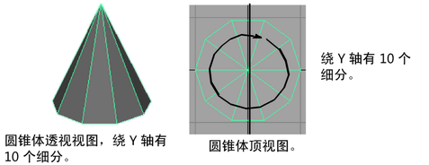
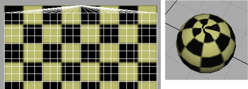

使用这些选项可设置从菜单创建的基本体（例如，球体或立方体）属性。另请参见创建多边形基本体。
球体(Sphere)
- 半径(Radius)
-
指定在所有方向上距球体中心的距离。（对于交互式创建，仅显示为单击设置。）
- 轴分段数(Axis Divisions)
- 此设置是大多数多边形基本体的公用设置。有关“轴分段数”(Axis Divisions)的描述，请参见本主题末尾的轴分段数(Axis Divisions)部分。
- 高度分段数(Height Divisions)
- 此设置是大多数多边形基本体的公用设置。请参见本主题末尾的多边形基本体的公用设置部分中的高度分段数(Height Divisions)。
- 轴(Axis)
- 此设置是许多多边形基本体的公用设置。有关“轴”(Axis)设置的描述，请参见本主题末尾的轴(Axis)部分。
- 纹理贴图(Texture Mapping)
- 此设置是大多数多边形基本体的公用设置。有关“纹理贴图”(Texture Mapping)选项的描述，请参见本主题末尾的为纹理贴图准备基本体部分。
立方体(Cube)
- 宽度(Width)
-
指定立方体的宽度。
- 高度(Height)
-
指定立方体的高度。
- 深度(Depth)
-
指定立方体的深度。
- 宽度分段数(Width Divisions)
- 此设置是多边形基本体的公用设置。有关“宽度分段数”(Width Divisions)设置的描述，请参见本主题末尾的深度(Depth)/宽度(Width)、深度分段数(Depth divisions)部分。
- 高度分段数(Height Divisions)
- 此设置是多边形基本体的公用设置。请参见本主题末尾的多边形基本体的公用设置部分中的高度分段数(Height Divisions)。
- 深度分段数(Depth Divisions)
- 此设置是多边形基本体的公用设置。有关“深度分段数”(Depth Divisions)设置的描述，请参见本主题末尾的深度(Depth)/宽度(Width)、深度分段数(Depth divisions)部分。
- 轴(Axis)
- 此设置是许多多边形基本体的公用设置。有关“轴”(Axis)设置的描述，请参见本主题末尾的轴(Axis)部分。
- 纹理贴图
- 此设置是大多数多边形基本体的公用设置。有关“纹理贴图”(Texture Mapping)选项的描述，请参见本主题末尾的为纹理贴图准备基本体部分。
圆柱体(Cylinder)
- 半径(Radius)
-
指定距圆柱体中心的距离。（对于交互式创建，仅显示为单击设置。）
- 高度(Height)
-
指定圆柱体的高度。（对于交互式创建，仅显示为单击设置。）
- 轴分段数(Axis Divisions)
- 此设置是大多数多边形基本体的公用设置。有关“轴分段数”(Axis Divisions)的描述，请参见本主题末尾的轴分段数(Axis Divisions)部分。
- 高度分段数(Height Divisions)
- 此设置是大多数多边形基本体的公用设置。请参见本主题末尾的多边形基本体的公用设置部分中的高度分段数(Height Divisions)。
- 倒角封口分段数(Cap Divisions)
- 此设置是具有封口的多边形基本体的公用设置。有关“封口分段数”(Cap Divisions)选项的描述，请参见本主题末尾的封口分段数(Cap Divisions)部分。
- 圆形端面(Round Cap)
- 此设置是具有封口的多边形基本体的公用设置。有关“圆形端面”(Round Cap)选项的描述，请参见本主题末尾的圆形端面(Round Cap)部分。
- 轴(Axis)
- 此设置是许多多边形基本体的公用设置。有关“轴”(Axis)设置的描述，请参见本主题末尾的轴(Axis)部分。
- 纹理贴图
- 此设置是大多数多边形基本体的公用设置。有关“纹理贴图”(Texture Mapping)选项的描述，请参见本主题末尾的为纹理贴图准备基本体部分。
圆锥体(Cone)
- 半径(Radius)
-
指定在所有方向上距圆锥体的底面的距离。（对于交互式创建，仅显示为单击设置。）
- 高度(Height)
-
指定圆锥体的高度。（对于交互式创建，仅显示为单击设置。）
- 轴分段数(Axis Divisions)
- 此设置是大多数多边形基本体的公用设置。有关“轴分段数”(Axis Divisions)的描述，请参见本主题末尾的轴分段数(Axis Divisions)部分。
- 高度分段数(Height Divisions)
- 此设置是多边形基本体的公用设置。请参见本主题末尾的多边形基本体的公用设置部分中的高度分段数(Height Divisions)。
- 倒角封口分段数(Cap Divisions)
- 此设置是具有封口的多边形基本体的公用设置。有关“封口分段数”(Cap Divisions)选项的描述，请参见本主题末尾的封口分段数(Cap Divisions)部分。
- 圆形端面(Round Cap)
- 此设置是具有封口的多边形基本体的公用设置。有关“圆形端面”(Round Cap)选项的描述，请参见本主题末尾的圆形端面(Round Cap)部分。
- 轴(Axis)
- 此设置是许多多边形基本体的公用设置。有关“轴”(Axis)设置的描述，请参见本主题末尾的轴(Axis)部分。
- 纹理贴图
- 此设置是大多数多边形基本体的公用设置。有关“纹理贴图”(Texture Mapping)选项的描述，请参见本主题末尾的为纹理贴图准备基本体部分。
圆环(Torus)
- 半径(Radius)
-
指定在所有方向上距圆环中心的距离。（对于交互式创建，仅显示为单击设置。）
- 截面半径(Section Radius)
-
指定构成圆环的截面的尺寸。更改该值，以增大或减小这些截面的半径。
- 扭曲(Twist)
-
“扭曲”选项值指定圆环的扭曲角度。更改该值以调整在所有方向上围绕圆环的距离。
- 轴分段数(Axis Divisions)
- 此设置是大多数多边形基本体的公用设置。有关“轴分段数”(Axis Divisions)的描述，请参见本主题末尾的轴分段数(Axis Divisions)部分。
- 高度分段数(Height Divisions)
- 此设置是大多数多边形基本体的公用设置。请参见本主题末尾的多边形基本体的公用设置部分中的高度分段数(Height Divisions)。
- 轴(Axis)
- 此设置是许多多边形基本体的公用设置。有关“轴”(Axis)设置的描述，请参见本主题末尾的轴(Axis)部分。
- 纹理贴图
- 此设置是大多数多边形基本体的公用设置。有关“纹理贴图”(Texture Mapping)选项的描述，请参见本主题末尾的为纹理贴图准备基本体部分。
平面(Plane)
- 宽度(Width)
-
指定沿 X 轴的距离（默认）。（对于交互式创建，仅显示为单击设置。）
- 高度(Height)
-
指定沿 Y 轴的度量（默认）。（对于交互式创建，仅显示为单击设置。）
- 圆形(Disc)
-
使用不同的边图案创建平坦的实心圆。
 - 边(Sides)
-
确定封口的平滑度。
- 细分模式(Subdivision mode)
-
确定将圆盘的每个切片进一步细分的形状。选项包括“四边形”(Quads)、“三角形”(Triangles)、“饼图”(Pie)、“封口”(Caps)和“圆形”(Circle)。
- 细分数(Subdivisions)
-
确定使用“细分模式”(Subdivision mode)细分基础面的次数。
- 半径(Radius)
-
根据从中心到一侧的边长确定圆盘大小。
柏拉图多面体(Platonic Solid)

- 基本体(Primitive)
- 确定基本体每一侧的基础面形状（按边数）。选项包括“四面体”(Tetrahedron)、“立方体”(Cube)、“八面体”(Octahedron)、“十二面体”(Dodecahedron)和“二十面体”(Icosahedron)。
- 细分模式(Subdivision mode)
- 确定形状以进一步细分基本体的每个面。选项包括“四边形”(Quads)、“三角形”(Triangles)、“饼图”(Pie)和“封口”(Caps)。
- 细分数(Subdivisions)
- 确定使用“细分模式”(Subdivision mode)细分基础面的次数。
- 球形膨胀(Spherical Inflation)
- 确定将细分推离基本体中心的程度。
棱锥(Pyramid)
棱锥是一种多面体，它有一个多边形底面和多个具有一个公共顶点的三角形面。Maya 可使用等边三角形创建三棱锥、四棱锥或五棱锥。
创建棱锥时，可以设置以下选项：
- 侧面长度(Side Length)
-
输入值，或使用滑块指定所有面的边长。（对于交互式创建，仅显示为单击设置。）
- 底面的边数(Number of Sides in Base)
-
选择棱锥底面的边数（3、4 或 5）。
- 高度分段数(Height Divisions)
- 此设置是大多数多边形基本体的公用设置。请参见本主题末尾的多边形基本体的公用设置部分中的高度分段数(Height Divisions)。
- 倒角封口分段数(Cap Divisions)
- 此设置是具有封口的多边形基本体的公用设置。有关“封口分段数”(Cap Divisions)选项的描述，请参见本主题末尾的封口分段数(Cap Divisions)部分。
- 轴(Axis)
- 此设置是许多多边形基本体的公用设置。有关“轴”(Axis)设置的描述，请参见本主题末尾的轴(Axis)部分。
- 纹理贴图
- 此设置是大多数多边形基本体的公用设置。有关“纹理贴图”(Texture Mapping)选项的描述，请参见本主题末尾的为纹理贴图准备基本体部分。
棱柱(Prism)
棱柱是一个多面体，它有两个多边形面处于平行平面上，其他面是平行四边形。
创建棱柱时，可以设置以下选项：
- 长度(Length)
-
输入值，或使用滑块指定棱柱的长度（两个多边形面之间的距离）。（对于交互式创建，仅显示为单击设置。）
- 侧面长度(Side Length)
-
输入值，或使用滑块指定棱柱的多边形端面的边长。（对于交互式创建，仅显示为单击设置。）
- 底面的边数(Number of Sides in base)
-
输入棱柱端面的边数。上述示例是一个三棱柱（3 条边）。如果边长和长度/高度比保持恒定，棱柱的尺寸和体积会随边数的增多而增大。
- 高度分段数(Height Divisions)
- 此设置是大多数多边形基本体的公用设置。请参见本主题末尾的多边形基本体的公用设置部分中的高度分段数(Height Divisions)。
- 倒角封口分段数(Cap Divisions)
- 此设置是具有封口的多边形基本体的公用设置。有关“封口分段数”(Cap Divisions)选项的描述，请参见本主题末尾的封口分段数(Cap Divisions)部分。
- 轴(Axis)
- 此设置是许多多边形基本体的公用设置。有关“轴”(Axis)设置的描述，请参见本主题末尾的轴(Axis)部分。
- 纹理贴图
- 此设置是大多数多边形基本体的公用设置。有关“纹理贴图”(Texture Mapping)选项的描述，请参见本主题末尾的为纹理贴图准备基本体部分。
管道(Pipe)
除了增加了“厚度”(Thickness)（指定壁的厚度）之外，这些选项与圆柱体多边形形状的选项非常相似。
- 半径(Radius)
-
指定在所有方向上距管道中心的距离。（对于交互式创建，仅显示为单击设置。）
- 高度(Height)
-
指定管道的高度。（对于交互式创建，仅显示为单击设置。）
- 厚度(Thickness)
-
指定管道壁的厚度。
螺旋线(Helix)
螺旋线是一种三维空间中的曲线，它位于一个圆柱体上，以使其与垂直于轴的平面的角度是恒定的。
- 圈数(Coils)
-
指定圈数。
- 高度(Height)
-
指定螺旋线的高度。（对于交互式创建，仅显示为单击设置。）
- 宽度(Width)
-
指定螺旋线的宽度。（对于交互式创建，仅显示为单击设置。）
- 半径(Radius)
-
指定螺旋线圈的半径。（对于交互式创建，仅显示为单击设置。）
- 方向(Direction)
-
指定螺旋线的扭曲方向：顺时针或逆时针。
齿轮(Gear)

- 边(Sides)
- 确定围绕齿轮中心的相同切片数量。
- 半径(Radius)
- 确定从齿轮中心到最远顶点测量的齿轮大小。
- 内部半径(Internal Radius)
- 确定在齿轮中心处从该中心到最远顶点测量的洞大小。
- 高度(Height)
- 确定齿轮的垂直大小。
- 高度分段数(Height Divisions)
- 确定沿高度细分齿轮的次数。
- 齿轮间距(Gear Spacing)
- 确定齿轮的每个挤出“齿”的水平长度。
- 齿轮偏移(Gear Offset)
- 确定齿轮的每个挤出“齿”的垂直长度。
- 齿轮尖端(Gear Tip)
- 确定齿轮的挤出“齿”在尖端的锥化程度。
- 齿轮中间(Gear Middle)
- 确定齿轮的挤出“齿”在中点的锥化程度。
- 扭曲(Twist)
- 沿齿轮的高度添加方向扭曲。
- 锥化(Taper)
- 确定整个齿轮沿其高度的锥化程度。
足球(Soccer Ball)
足球是一个截断的二十面体：三十二个面，六边形和五边形交替。
对于该形状，可以设置以下选项：
- 半径(Radius)
-
输入值，或使用滑块指定足球的半径。（对于交互式创建，仅显示为单击设置。）
- 侧面长度(Side Length)
-
输入值，或使用滑块指定足球的侧面长度。（对于交互式创建，仅显示为单击设置。）
超形状

超形状是基于立方体和球体的基本体，能够创建复杂的有机形状。但是，由于这些形状具备高度精确的特性，因此建议使用默认值创建基础形状，然后在关联的 superShape 节点中试用“随机”(Random)按钮，从而获得接近所需的形状。然后，可以使用“属性编辑器”(Attribute Editor)调整该形状。
有关“超形状”(Super Shape)选项的详细信息，请参见 superShape 节点。
交互式创建(Interactive Creation)
可以在使用鼠标创建基本体时定位和缩放它们，而不必使用变换工具。除非手动禁用，否则此选项将一直处于启用状态。详细信息请参见创建多边形基本体。
完成时退出(Exit on Completion)
该选项可与“交互式创建”(Interactive Creation)交互。如果启用“完成时退出”(Exit on Completion)，则必须重新选择一个基本体类型才能创建另一个基本体。禁用该选项后，就可以交互地创建相同类型的多个基本体，直到选择另一个工具为止。
多边形基本体的公用设置
分段(Divisions)
通过添加或除去多边形曲面的面，在这些框中输入的值可以更改基本体。
几乎所有基本体都允许沿高度轴进行细分。有一个例外是螺旋线，螺旋线是按圈进行细分的。
径向对称的基本体允许围绕轴进行细分。这些基本体包括球体、圆柱体、圆锥体、圆环、管道和螺旋线。
具有端面的基本体允许细分端面。这些基本体包括圆柱体、圆锥体、管道和螺旋线。
平面允许沿宽度轴进行细分，而立方体允许沿宽度和深度两个方向进行细分。
- 轴分段数(Axis divisions)
-
该选项定义围绕轴的细分的数量。在“通道盒”(Channel Box)和“属性编辑器”(Attribute Editor)中，该选项称为“轴向细分数”(Subdivisions Axis)。
增大或减小该值可添加或除去围绕“轴”(Axis)选项所定义的轴的面。
- 高度分段数(Height divisions)
-
该选项定义沿“轴”(Axis)选项所定义的轴存在的细分数。默认情况下，“高度”(Height)表示 Y 方向。在“通道盒”(Channel Box)和“属性编辑器”(Attribute Editor)中，该选项称为“高度细分数”(Subdivisions Height)。增大或减小该值可添加或除去“轴”(Axis)方向上的面。
- 深度(Depth) / 宽度(Width)、深度分段数(Depth divisions)
-
在“轴”(Axis)设置为 X 或 Y 时，深度表示多边形立方体的 Z 方向。在“轴”(Axis)设置为 Z 时，深度表示 Y 方向。在“通道盒”(Channel Box)和“属性编辑器”(Attribute Editor)中，该选项称为“深度细分数”(Subdivisions Depth)。增大或减小该值可添加或除去深度方向上的面。
- 端面分段数(Cap divisions)
-
端面是圆锥体、圆柱体、棱柱、棱锥、管道和螺旋线的顶部、底部或侧面。该选项定义围绕基本体端面原点的细分数。在“通道盒”(Channel Box)和“属性编辑器”(Attribute Editor)中，该选项称为“端面细分数”(Subdivisions Cap)。增大或减小该值可添加或除去围绕端面的面。
- 圆形端面(Round Cap)
-
该选项允许为端面创建圆形曲面。“端面细分数”(Subdivisions Cap)值必须为 1 或更大才能看到圆形端面效果。该选项适用于“圆柱体”(Cylinder)、“圆锥体”(Cone)、“管道”(Pipe)和“螺旋线”(Helix)基本体。
轴(Axis)
在“交互式创建”(Interactive Creation)中不会出现该选项。
若要在交互式创建过程中为基本体设置轴，可以使用正交视图。不管创建基本体时使用的是何种视图（顶视图、前视图或侧视图），该视图都是将对齐基本体的轴（Y、Z 或 X）的方式。
默认情况下，基本体是沿“Y”轴创建的。通过更改“轴”选项，可以在创建基本体之前更改基本体的默认方向。
无法从“通道盒”(Channel Box)更改新基本体的方向，但可以在“属性编辑器”(Attribute Editor)中的“轴”(Axis)框中输入值。
创建 UV (Create UVs)
下表列出了每种多边形基本体类型的公共“创建 UV”属性。
| 形状 | 归一化 | 保持纵横比 | 其他选项 |
|---|---|---|---|
|
球体(Sphere) |
是 |
||
|
立方体(Cube) |
是 |
是 |
|
|
圆柱体(Cylinder) |
是 |
是 |
|
|
圆锥体(Cone) |
是 |
是 |
|
|
平面(Plane) |
是 |
||
|
圆环(Torus) |
|||
|
棱柱(Prism) |
是 |
是 |
|
|
棱锥(Pyramid) |
是 |
是 |
|
|
管道(Pipe) |
|||
|
螺旋线(Helix) |
是 |
是 |
|
|
足球(Soccer Ball) |
是 |
是 |
|
|
柏拉图多面体(Platonic Solids) |
是 |
是 |
有关“创建 UV”(Create UVs)属性的详细信息，请参见：
为纹理贴图准备基本体
默认情况下，为纹理贴图指定 UV 纹理坐标。如果不打算在多边形基本体上映射纹理，可以在选项窗口中禁用“创建 UV”(Create UVs)选项。
关于 UV 的重要说明
如果在对象上不存在 UV，则无法看到映射纹理。如果在禁用“创建 UV”(Create UVs)选项的情况下无意中创建了基本体对象，则可能会发生这种情况。
若要解决该问题，请选择基本体的多个面，并使用“编辑 UV”(Edit UVs)菜单中的任意贴图项。
然后可以使用 UV 编辑器查看创建的“UV”。选择对象，然后使用用于创建或编辑 UV 的任何“创建 UV”(Create UVs)菜单项。
具有面或端面的基本体的纹理贴图选项
具有面或端面的基本体的选项窗口包括“创建 UV”(Create UVs)菜单，从中可以选择在指定纹理贴图时希望纹理贴图如何覆盖基本体。从“属性编辑器”(Attribute Editor)也可访问“创建 UV”(Create UVs)菜单。
创建 UV (Create UVs)
（默认值。）该选项为纹理贴图指定基本体上的 UV 纹理坐标。
各种归一化设置使 UV 适配 0 到 1 纹理空间。“整体归一化和保持纵横比”(Normalize Collectively and Preserve Aspect Ratio)是默认设置。
- 归一化关闭(Normalization Off)
-
不会进行任何归一化，且纹理将保持其实际大小。
- 整体归一化(Normalize Collectively)
-
该选项将纹理映射到基本体的每个面上，并归一化它，使其覆盖整个对象。
- 分别归一化 每个面(Normalize Each face Separately)
-
仅可用于“立方体”(Cubes)、“足球”(Soccer Balls)和“柏拉图多面体”(Platonic Solids)。
如果选择该选项，Maya 会将纹理分别映射到每个面。
- 整体归一化和保持纵横比(Normalize Collectively and Preserve Aspect Ratio)
-
（默认值。）归一化 UV 保持 UV 的原始纵横比，而不拉伸 UV 以适配 0 到 1 纹理空间。该选项影响基本体上的纹理贴图的外观。
基本体球体的 UV 选项
多边形球体基本体的选项窗口包括“创建 UV”(Create UVs)菜单，可以从中选择一个项目来指定希望纹理贴图在极点的行为方式。从“属性编辑器”(Attribute Editor)也可访问“创建 UV”(Create UVs)菜单。
- 在极点收缩(Pinched at poles)
-
在围绕极点的三角形的环被视为具有单个公共顶点（极点）的位置，创建 UV 纹理贴图。
 - 极点处锯齿形(Sawtooth at poles)
-
（默认值。）在围绕极点的三角形的环被视为单个三角形的位置，创建 UV 纹理贴图，使 UV 贴图的边缘看起来像锯齿。通常，该效果在三维视图中显示得更好；但是，它也会引入纹理边界，而纹理边界可能不是始终都需要的。
创建基本体之后对其进行调整(Adjust primitive after creation)
对基本体启用“交互式创建”(Interactive Creation)后，可以选择使用以下选项修改基本体的细分。只有拥有细分属性的基本体才会有这些选项。
- 创建之后“调整细分数”(Adjust subdivisions)
-
向“交互式创建”(Interactive Creation)过程添加附加步骤，从而在以交互方式创建基本体时可以调整基本体的细分数。附加步骤的数量取决于基本体类型。启用“交互式创建”(Interactive Creation)时，默认设置为启用。
- 创建之后“调整端面细分数”(Adjust cap subdivisions)
-
向“交互式创建”(Interactive Creation)过程添加附加步骤，从而可以调整包含端面的基本体（圆柱体、圆锥体、棱锥、棱柱、螺旋线、管道）上的端面细分数。默认设置为禁用。仅当启用“创建之后“调整细分数”(Adjust subdivisions)选项时，才可以使用该选项。